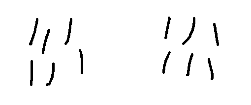
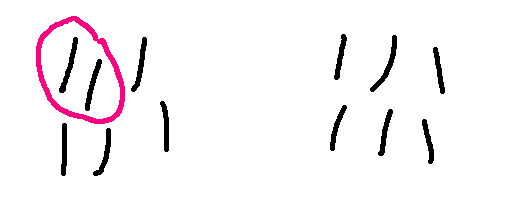
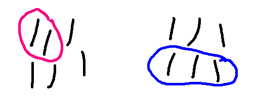
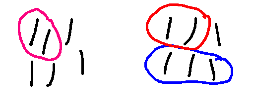
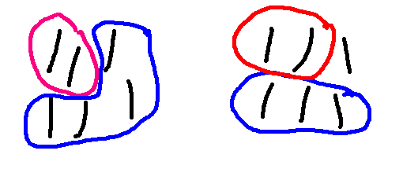
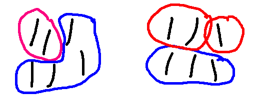

Back in the day, the drinking age was not only lower but students smoked. So restaurant tables often had books of matches that groups of diners would play with. Here's a game that might have been played in that world, called " Nim". Nim comes in many variations and we'll pick only one to look at.
This is a two-person game. It starts with two piles of matches, the same size.

When each person moves, they get to take some number of matches. The matches must all come from the same pile, but they can choose either pile. Play alternates between the players until all the matches are gone. The winner is the person who takes the last match.
So here is a sequence of moves, with the red player eventually winning the game.





I claim that the player who moves second can always force a win in this version of Nim. The first player won in the game above, but that's because the second player wasn't playing as well as they could.
We'll show that this is true by explaining how the second player must move in order to guarantee that they will win. I'm not going to write up all the formal details. I mostly want you to see what the main pieces are.
A good strategy for the second player is to shadow the first player. If the first player takes p matches from one pile, the second player should take p matches from the other pile. This means that the piles are always the same size after the second player moves.
Because the two piles are always the same size at these key points in the game, a good choice for the induction variable n is the number of matches in one pile. If we wanted to represent a wider range of games, we might need a more sophisticated representation of game size.
The smallest game contains only one match in each pile. The first player has only one legal move: remove the last match from one pile. And then the second player wins by removing the other match.
Our inductive hypothesis is that the second player can force a win for n = 1 up through k. We need to show that the second player can force a win for a game of size k+1.
The first thing that happens in our game of size k+1 is that the first player takes p matches from one of the piles. So we now have a pile with k+1-p matches and a pile with k+1 matches.
There's two cases. Perhaps the first player took all the matches from the one pile. That is p=k+1. Then the second player can clear the other pile and win the game.
The second case is that here are still matches left in both piles. In this case, the second player removes p matches from the other pile. We now have a Nim game of size k+1-p. Since \(1 \le k+1-p \le k\), this game is covered by our inductive hypothesis. That is, our inductive hypothesis tells us that the second player can force a win.
Notice that our inductive step takes a large object (the game of size k+1) and reduces it to a smaller object (a smaller game) plus some extra stuff (the pair of moves at the start). This is the most important part of building an inductive step.
Also notice that we don't have much control over the size of the smaller game. The first player might have taken only one match, in which case our new game is size k. But they might have taken 5 matches, in which case our new game is size k-4. So it's important that our inductive hypothesis covered a range of sizes.
An inductive hypothesis covering all sizes up to k is called a "strong" hypothesis. In computer science, you'll see many problems (especially in data structures) where the proofs require a strong hypothesis. So we'll make you use the strong variant in this class, so that you get lots of practice writing that kind of inductive hypothesis.
If you're also taking math classes, those may have you use a simpler "weak" variant where the inductive hypothesis covers only size k. They teach it this way because many numerical problems don't need a strong hypothesis.